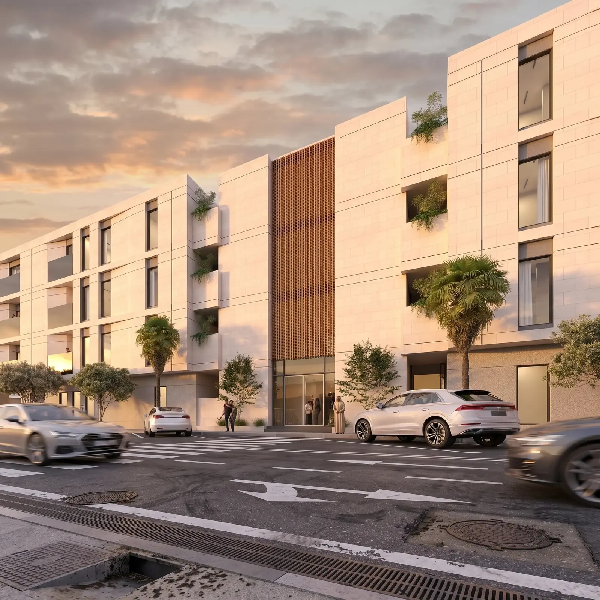
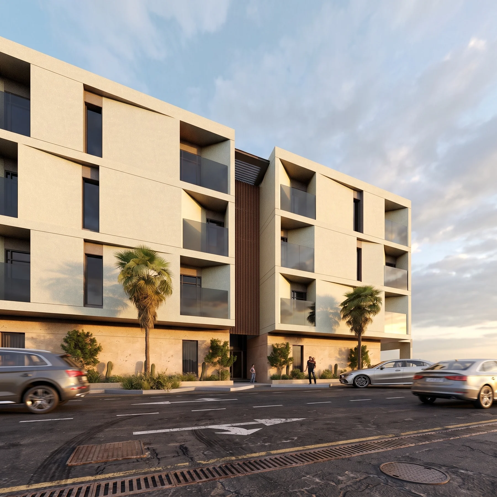
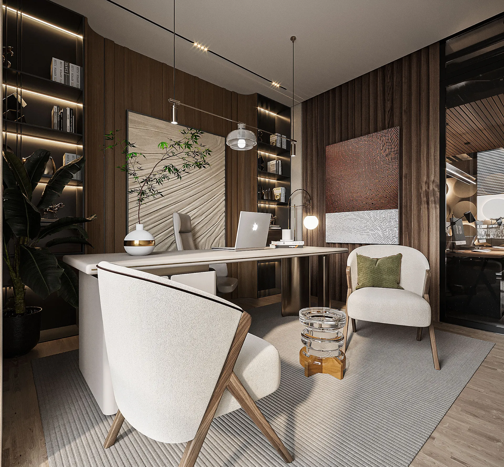
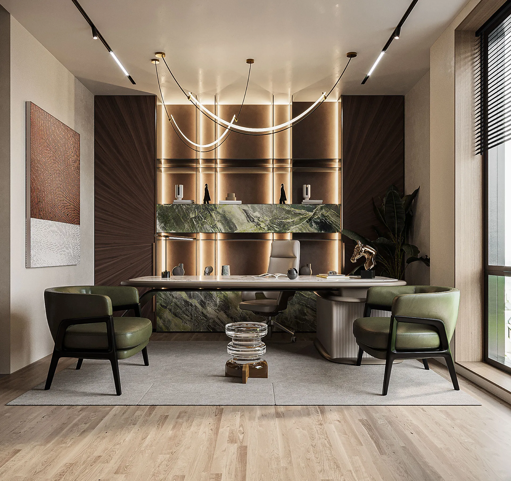
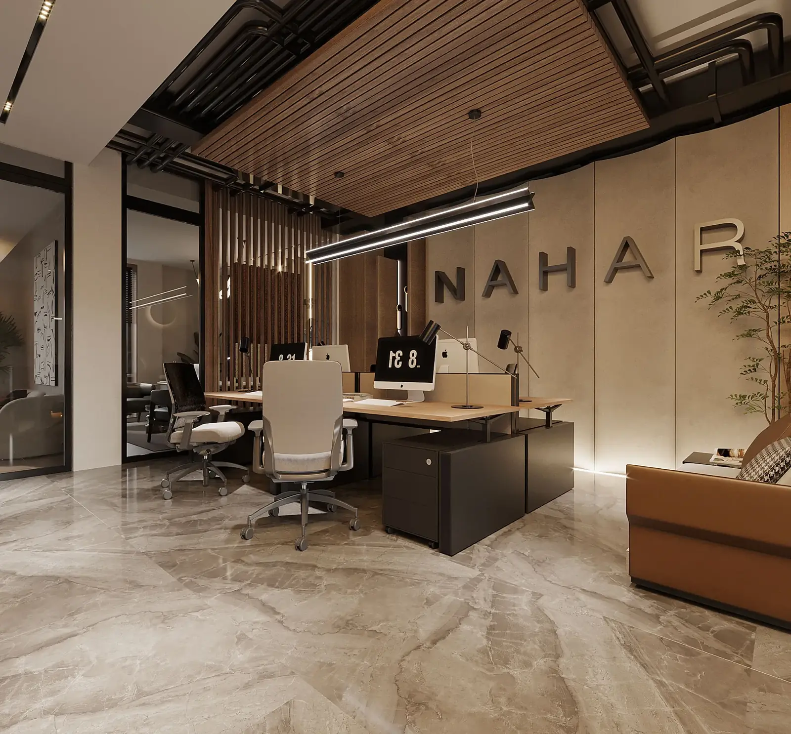
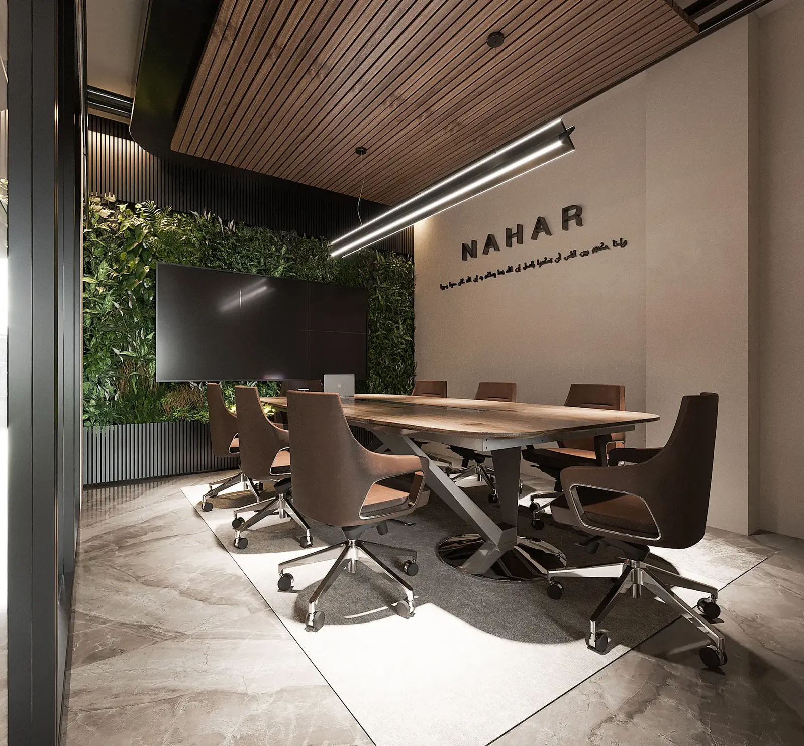

Residential · Architecture
Architecture · Interiors · Spatial Design
Camr Studio
— Architecture— Interior Design— Urban Design
We shape calm, contemporary environments through proportion, material, light, and a rigorous attention to how people move through space.
01 · Studio
Architecture that feels inevitable.
Camr Studio creates architecture and interiors with a restrained material language, strong geometry, and human-scale detail.
From private residences to multi-unit developments and commercial environments, each project is treated as a complete spatial identity, not a collection of isolated rooms or façades.
01 / Context
02 / Proportion
03 / Material
04 / Light
02 · Selected projects
Built around atmosphere,
detail and lasting clarity.
Residential · Villas
Residential Villas
Solid volumes softened by landscape and carefully framed openings.Commercial · Mixed Use
Commercial and Offices Building
Perforated screens, deep shade, and active ground-level frontage.Residential · Architecture
Residential Floors


03 · Interior Design
Interiors shaped by
material and light.




04 · What we do
From first line
to final detail.
Integrated design thinking keeps architecture, interiors, materials, lighting and visual identity aligned from concept to delivery.
Architecture
Concept design, façade development, spatial planning, design development, and coordinated architectural packages.
Interior Design
Residential and commercial interiors built around material harmony, custom details, and purposeful circulation.
Design Direction
Material palettes, architectural identity, styling direction, and coherent design language across the full project.
Visualization
High-quality spatial visualization that communicates atmosphere, scale, materials, and the intended experience before construction.
“Quiet architecture.
Strong identity.”
05 · Contact
Have a project in mind?
Let’s shape it
with intention.
Camr Studio welcomes residential, commercial, architecture, and interior design enquiries.
Start a conversation